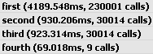
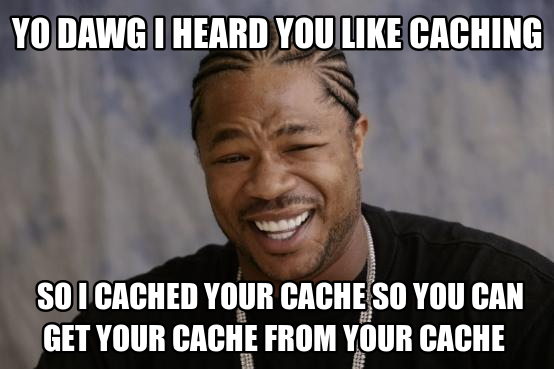

Faster HTML5 Apps
CSS
Javascript
CSS is simple yo!
I know Javascript I use jQuery all the time
Effective css selectors
#content > li { font-color: blue;}
#content a { font-size: 20px; }
Effective css selectors
- *Avoid universal selectors #foo > *
- *Dont qualify selectors
div#item {}
#item {} - *avoid tag-child selectors
#main > ul
.main-ul - *don't rewrite use inheritance where possible
display: none VS visibility: hidden
Sample list
- Home
- News
- Blog
- About
display:none
- Home
- Blog
- About
visibility:hidden
- Home
- Blog
- About
Positioning
position: absolute !important;
top: -9999px !important;
left: -9999px !important;
Use absolute positioning everywhere?
Use CSS3 tricks with caution
box-shadow
-webkit-transform: translateZ(0);
-webkit-transition

Adding many elements to the DOM
for (var i = 0; i < 10000; i++) {
$("#for-loop-one").append('<tr><td>' + i + '</td></tr>');
}
4189.548ms, 230001 calls
Adding many elements to the DOM
var html = '';
for (var i = 0; i < 10000; i++) {
html += '<tr><td>' + i + '</td></tr>';
}
$("#for-loop-two").append(html);
930.206ms, 30014 calls
Adding many elements to the DOM
var html = [];
for (var i = 0; i < 10000; i++) {
html.push('<tr><td>' + i + '</td></tr>');
}
$("#for-loop-three").append(html.join(''));
923.314ms, 30014 calls
Adding many elements to the DOM
var out = [], o = -1;
out[++o] = '<table><tbody>';
for (var i = 0; i < 10000; i++) {
out[++o] = '<tr><td>';
out[++o] = i;
out[++o] = '</td></tr>';
}
out[++o] = '</tbody></table>';
$('#for-loop-four').html( out.join('') );
69.018ms, 9 calls
Adding many elements to the DOM
~61x
Using selectors in jQuery
<div id="main">
<ul>
<li>0</li>
<li>1</li>
... [1000]
</ul>
</div>
First instinct
$('#main');
$('#main ul');
$('#main li:eq(10)');
(3.914ms, 49 calls)
(3.914ms, 49 calls)
Using selectors in jQuery
If you use it more than once cache it!
var second = $('#main');
second.find('ul');
second.find('li:eq(100)');
(1.081ms, 44 calls)

Using selectors in jQuery
Let's cache some more!
var third = $('#main');
var third_ul = second.find('ul');
third_u.find('li:eq(100)');
(0.313ms, 14 calls)
Using selectors in jQuery
Can we do even better?
var fourth = $(document.getElementById('main'));
var fourth_ul = second.find('ul');
fourth_ul.find('li:eq(100)');
(0.19ms, 14 calls)
Note: When using the document.getElementById some object parameters are lost
Using selectors in jQuery
From 3.914ms
..
..
To 0.19ms
What you should remember
*Check where's your CSS selectors at
*Render only ONCE!
*Be careful with the awesome CSS3 features
*Manipulate DOM as little as possible
*Cache DOM elements as much as possible
Thank you
All the slides and demos will be available at http://indrekv.github.com
Presentation created with impress.js http://bartaz.github.com/impress.js